Your browser doesn't support the features required by impress.js, so you are presented with a simplified version of this presentation.
For the best experience please use the latest Chrome, Safari or Firefox browser.
Damien Alexandre
Benjamin Clay
Damien Alexandre
 @damienalexandre
@damienalexandre
Consultant Web - PHP/Symfony/Js
Clever Age
Benjamin Clay

@ternel
Éleveur de poneys - PHP/Symfony
Clever Age
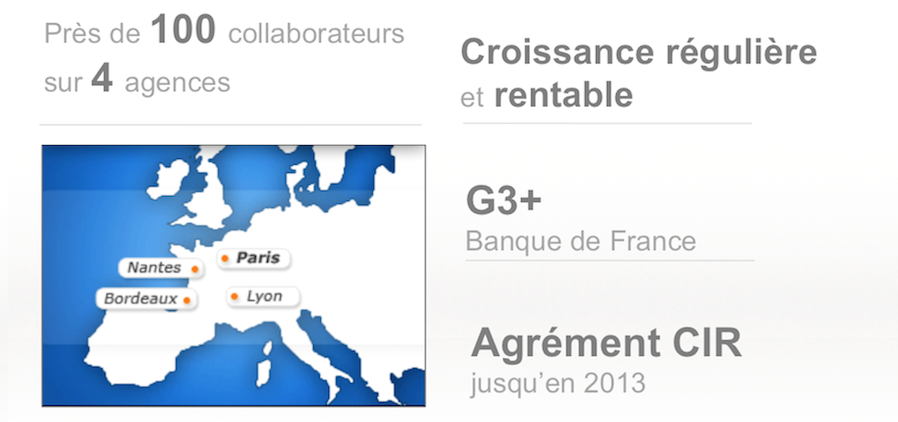
Coup de pied dans la
LAMP
Cette conférence n'est pas une conférence sur le cyclimse...
Performances
Un site excellent qui met trop de temps à s'afficher, c'est un site pénalisé.
Attention, il n'existe pas *UNE* configuration de la stack LAMP parfaite
La stack LAMP
LAMP dans le monde
- Linux : 85% des serveurs web
- Apache : 65% des serveurs web
- MySQL : 45% des serveurs web
- PHP : 77% des serveurs web
Serveur de test
Serveur basique (kimsufi OVH), 50€ / mois
- Intel i5 CPU 760 @ 4 x 2.80GHz
- 16 Go de mémoire DDR3
- Disque 1To
- Connexion 100 Mbps
Procédure de test
- Debian Squeeze frais
- Drupal - 10 000 contenus générés, sans cache, ni cron
- Surf sur le site
- Extraction d'urls depuis les logs apaches
- Siege depuis un autre serveur
- Stress test de 50 à 350 concurrents
Installation basique
apt-get install apache2 mysql-server php5 php-pear php5-mysql php5-gda2enmod rewrite
Versions
- PHP : 5.3.3-7+squeeze9
- MySQL : 5.1.61-0+squeeze1 sans mysqlnd
- Apache : 2.2.16-6+squeeze7
Bench de référence
- Maximum = 45 req/s
- Temps de réponse = jusqu'à 7s
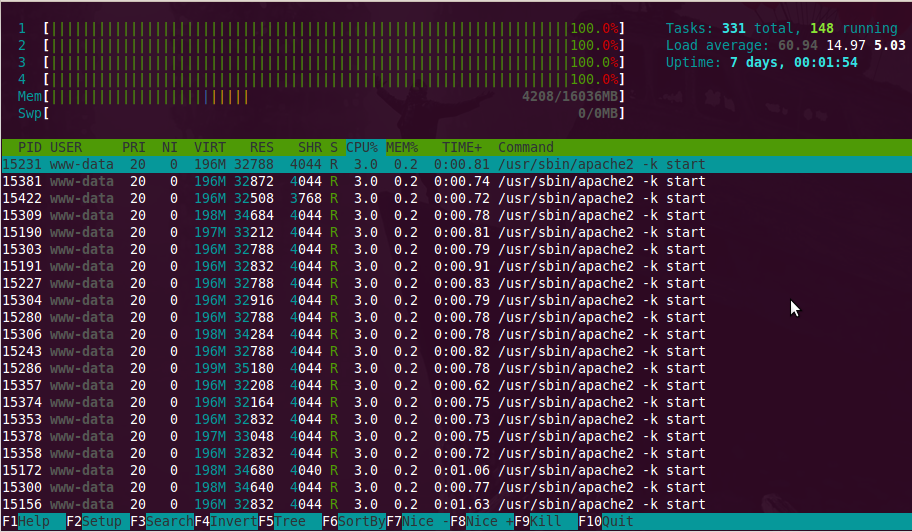
Load Average
- Doit être inférieur à votre nombre de CPU
- Avec 4 cores, un load au dessus de 3.5 est une "anomalie"
- ou pas.
1.03 0.22 0.11
1min 5min 15min
Monitorer ses serveurs !
Comment monitorer ?
- Monitoring applicatif : Pourquoi et comment ?
- Salon Honorat à midi
- Présenté par Kenny DITS
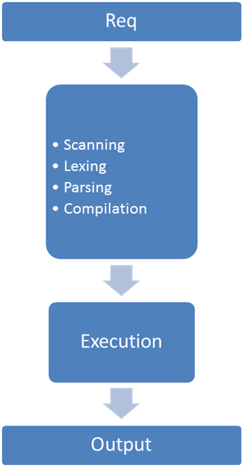
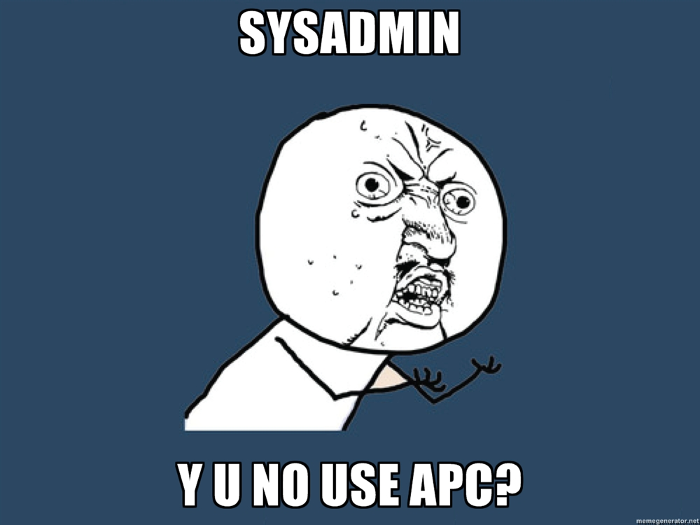
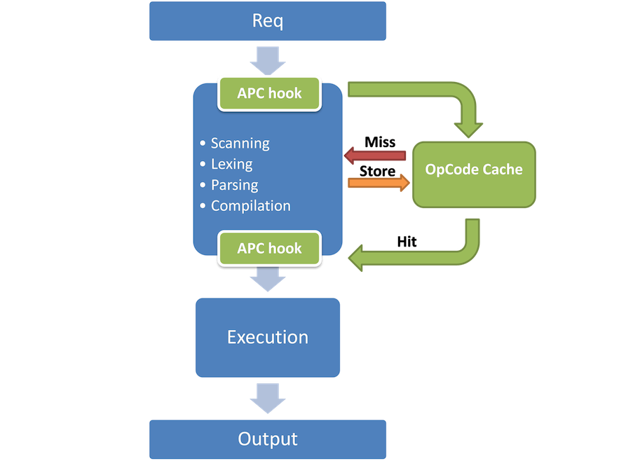
APC : Cache d'OpCode
apt-get install php5-apc
On obtient 70 req/s et temps de réponse diminués
FREE WIN
If you care about performance and don’t use a bytecode cache then you don’t really care about performance. Please get one and start using it.
Stas Malyshev, PHP Core Contributor, Zend employee
Dotdeb
♥ by Guillaume Plessis ♥
- PHP 5.4 et 5.3 + extensions
- MySQL 5.5 and 5.1
- Percona toolkit
- Nginx...
Sur Debian 6.0 pour amd64 et i386.
Installation
/etc/apt/sources.list
deb http://packages.dotdeb.org squeeze all
deb-src http://packages.dotdeb.org squeeze all
wget http://www.dotdeb.org/dotdeb.gpg
cat dotdeb.gpg | sudo apt-key add -
apt-get update
Installation basique bis
apt-get install apache2 mysql-server php5 php-pear php5-mysql php5-gd php5-apca2enmod rewrite
Versions
- PHP : 5.3.13-1+dotdeb.0
- MySQL : 5.5.24 avec mysqlnd
- Apache : 2.2.16 (identique)
"fonctions avancés du driver MySQL natif pour PHP" à 16:30, Espace Adenauer par Serge Frezefond
Version dotdeb et APC
5 secondes de temps de réponse,
et presque 100 req/s
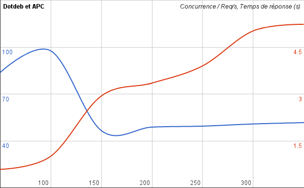
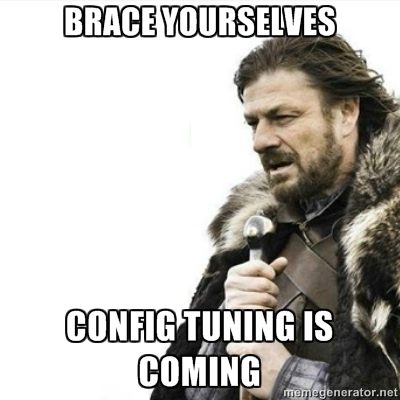
MySQLTuner.pl
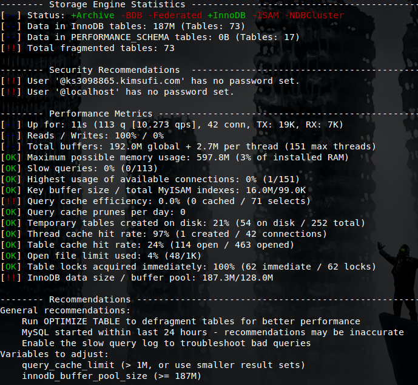
MySQL Tuning Primer
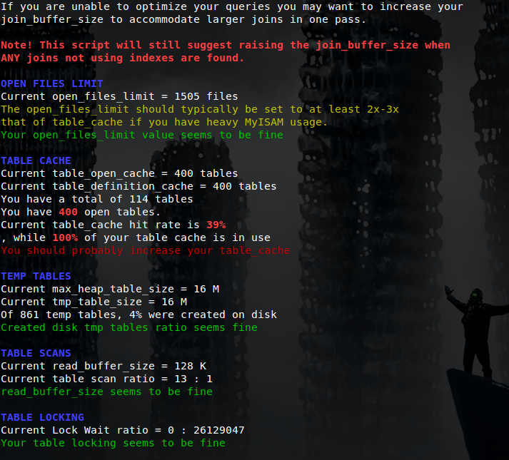
Configurons MySQL
- innodb_thread_concurrency = 0
- innodb_buffer_pool_size = 1024M
- innodb_flush_method = O_DIRECT
- max_connections = 300
- query_cache_limit = 1M
- query_cache_size = 200M
Apache2 mod_status
- Le nombre de worker en cours / en attente
- Le status complet de chaque worker
- Le uptime du serveur
- Les moyennes de poids, req / secondes...
- L'utilisation du CPU
- Les requêtes et leurs hosts
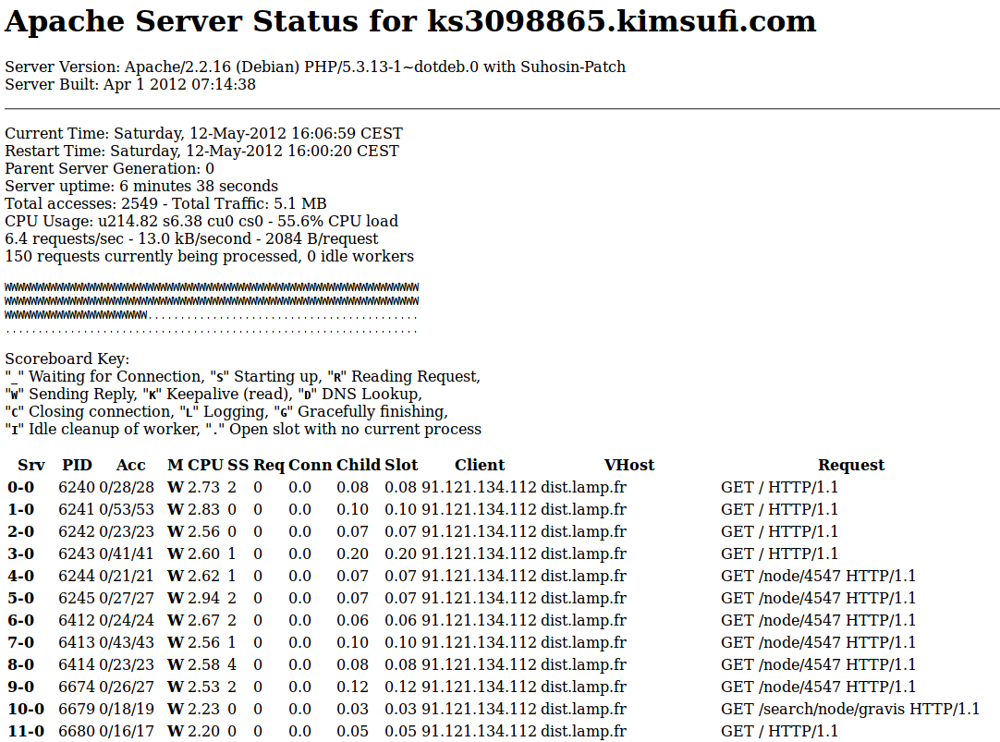
Installer mod_status
a2enmod mod_status
ExtendedStatus On
<Location /server-status>
SetHandler server-status
Order Deny,Allow
Deny from all
Allow from .pony.com
</Location>
Tuner Apache
- Désactiver les modules inutiles :
a2dismod authn_file authz_default authz_groupfile authz_user autoindex deflate negotiation reqtimeout setenvif env cgi
- MaxClient de 150 à 250
apc.stat = 0
Moins de 5 secondes
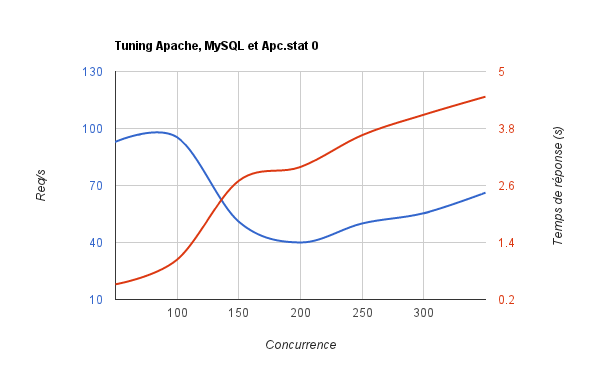
Apache => Ngnix
MySQL => MariaDB
Linux => Windows
PHP => PERL
Modifier notre stack logiciel sans peine et sans avoir à toucher à notre code PHP.
Nous ne sommes pas des sysadmins. C'est un métier.
Qu'est ce que MariaDB
- 2008 : Sun achète MySQL (bouh)
- avril 2009 : Oracle achète Sun
- mai 2009 : Monty Widenius, créateur de MySQL, démissionne et crée The Monty Program. Sa nouvelle société crée un fork nommé MariaDB
I ♥ MariaDB
- Vraiment opensource (MySQL contient des features réservés aux entreprises)
- Est et restera sous licence GPL (v2)
- 100% compatible avec MySQL
- Créé par les créateurs de MySQL
- Haut lieu de l'innovation technologique du SGBD :)
They ♥ MariaDB
- Déjà utilisé chez PAP, Paybox, OLX, Jelastic...
- Support disponible
- SkySQL
- Percona Inc
- Monty Program
- FromDual
MariaDB 5.5
- Threadpool
- Group commit dans le log binaire
- Lib cliente non bloquante
- SphinxSE pour le full-text
- GIS
Facile à installer
Drop-in replacement du binaire MySQL.
# MariaDB repository list
# http://downloads.mariadb.org/mariadb/repositories/
deb http://mirror.switch.ch/mirror/mariadb/repo/5.5/debian squeeze main
deb-src http://mirror.switch.ch/mirror/mariadb/repo/5.5/debian squeeze main
apt-get update
apt-get install mariadb-server-5.5
Ne pas oublier d'exclure dotdeb du sources.list
Le Threadpool
Proposé chez Oracle sous forme de plugin dans la version commerciale de MySQL.
thread_handling=pool-of-threads
Sysbencher Threadpool
Utilisation de sysbench :
sysbench --test=oltp --oltp-table-size=1G --db-driver=mysql --mysql-host=localhost
--mysql-user=root --mysql-password=poney --init-rng=1 --num-threads=256 --max-requests=0
--oltp-read-only --oltp-dist-type=uniform --max-time=180 run
Le Threadpool ça rox
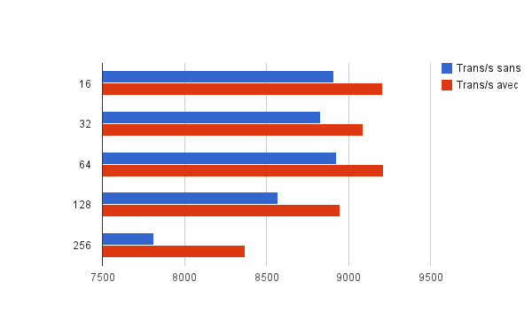
The Nginx story
- Igor Sysoev en 2002
- Documentation en anglais en 2006
- Explosion en 2008
- Levée de fond de 3M$ en 2011
- Nginx HQ @ SF en 2011
Nginx
- Développé pour le fort trafic
- C10K Problem
- Noyau minimal, beaucoup de modules
- Traitements asynchrones
- Peu de ressources utilisées !
Avec PHP-FPM
- FastCGI Process Manager
- Implémentation du FastCGI pour PHP
- Plusieurs pools de PHP avec configuration
- SlowLog
Nginx et PHP-FPM
apt-get install nginx php5-fpm
Copier/Coller de la configuration "Drupal" depuis le wiki nginx.
Nginx et PHP-FPM
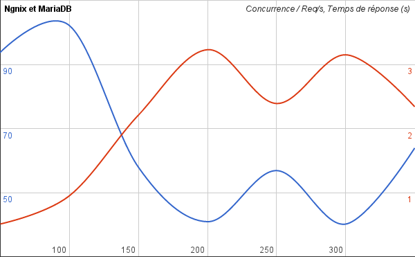
Nginx et PHP-FPM
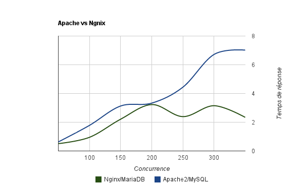
- FastCGI / SSL / VirtualHost / ...
- Configuration simple
- Symfony
- RoR
- Django
- Liferay
- Glassfish
- SugarCRM
- phpBB...
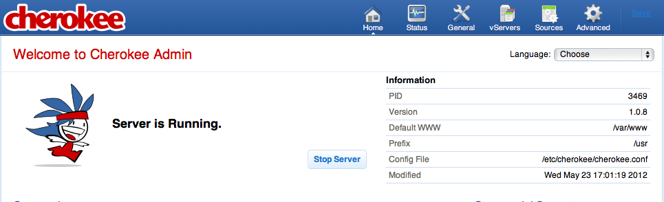
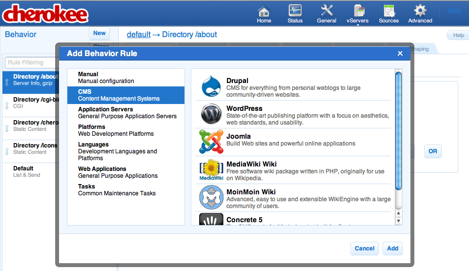
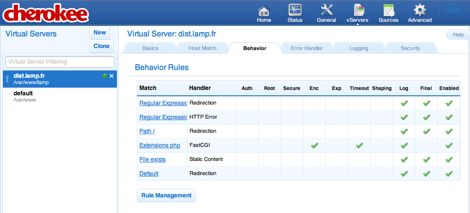
- Fondé par Peter Zaitsev (expert badass)
- Build de MySQL patché
- XtraDB = InnoDb en mieux (utilisé dans MariaDB)
- Fondé par Brian Aker
- Forké de MySQL 6, allégé, passé en C++
- Se concentre sur la scalabilité
Et PHP 5.4 ?
Suivre les mises à jours de PHP c'est aussi bénéficier d'améliorations de performance.
PHP 5.3 a trois ans.
Installer PHP5.4
Merci Dotdeb !
deb http://packages.dotdeb.org squeeze-php54 all
deb-src http://packages.dotdeb.org squeeze-php54 all
Très peu d'incompatibilités
mais APC en beta.
PHP 5.4 == FREE WIN
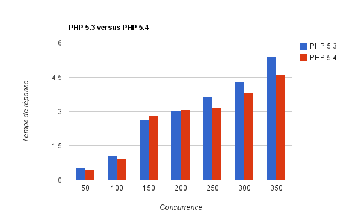
Apache 2.4
- 7 ans d'attente !
- Consommation mémoire réduite
- Amélioration générale des performances
- Le "MPM Event" stable
- Lectures/écritures asynchrones des MPM
Pas d'installation simple, on compile !
Pinaaaaageeeeeeeee
+ de 100 req/s, 3 secondes
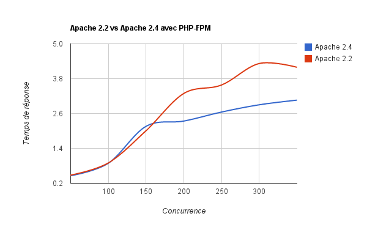
Et si on virait HTTP ?
Spdy
- SSL
- gzip/DEFLATE by design (pour les headers aussi)
- une seule connexion pour toutes les ressources d'une page web
- Candidat pour HTTP 2.0
Utilisé par Google, Wikipedia, Twitter, HumbleBundle...
Installation simple !
dpkg -i mod-spdy-*.deb- Génération d'un certificat SSL
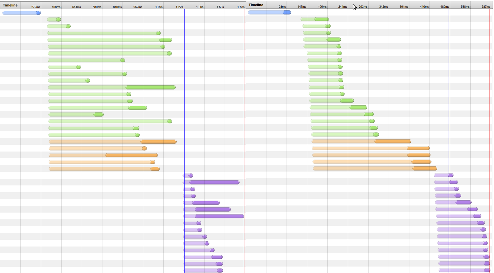
Le changement, c'est maintenant.
Questions ?
De gros chocobisoux à mateo pour l'aide, et pour le serveur de Siege.
Perrine pour sa patience.
Impress.JS pour nos slides.
Mr. Gif animé pour son invention.